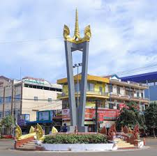

 ខេត្តរតនគិរី គឺជាខេត្តមួយស្ថិតនៅភូមិភាគឦសាននៃប្រទេសកម្ពុជា។ ខេត្តរតនគិរីមានព្រំប្រទល់ខាងខាងកើតជាប់នឹងខេត្តកន្ទូម និងខេត្តយ៉ាឡាយ នៃសាធារណរដ្ឋសង្គមនិយមវៀតណាម ខាងលិចជាប់នឹងខេត្តស្ទឹងត្រែង ខាងជើងជាប់នឹងខេត្តអាត្តពឺ នៃសាធារណរដ្ឋប្រជាធិបតេយ្យប្រជាមានិតឡាវ និងខាងត្បូងជាប់នឹងខេត្តមណ្ឌលគិរី ហើយមានចម្ងាយ ៥៨៨គីឡូម៉ែត្រ ពីរាជធានីភ្នំពេញ ។ ខេត្តរតនគិរីជាខេត្តមួយដែលមានលក្ខណៈពិសេសជាងគេក្នុងចំណោមខេត្តដែលនៅភូមិភាគឦសានប្រទេសកម្ពុជា ដោយខេត្តមានតំបន់ទេសចរណ៍ធម្មជាតិជាច្រើនអនេក និងទេសចរណ៍វប្បធម៌ជនជាតិភាគតិចផងដែរ។អស់រយៈពេលជាងមួយសហស្សវត្សរ៍មកហើយ ខេត្តរតនគិរីត្រូវបានកាន់កាប់ដោយពួកក្រុមជនជាតិខ្មែរលើ ក្នុងសម័យប្រវត្តិសាស្ត្រដើមតំបន់ពួកខ្មែរលើត្រូវបាន អាណាចក្រជិតខាងធ្វើការជួញដូរធ្វើជាទាសករ។ សេដ្ឋកិច្ចពាណិជ្ជកម្មទាសករនេះបានបញ្ចប់ក្នុងសម័យអាណានិគមបារាំង ប៉ុន្តែយុទ្ធនាការខ្មែរភាវូបនីយកម្មដ៏ឃោរឃៅបន្ទាប់ពីកម្ពុជាទទួលបានឯករាជ្យម្តងទៀតបានគំរាមកំហែងដល់របៀបរស់នៅរបស់ខ្មែរលើ។ ខ្មែរក្រហមបានសាងសង់ទីស្នាក់ការរបស់ខ្លួននៅក្នុងខេត្តនេះក្នុងទសវត្សរ៍ឆ្នាំ១៩៦០ ហើយការទម្លាក់គ្រាប់បែកក្នុងអំឡុងសង្គ្រាមវៀតណាមបានបំផ្លិចបំផ្លាញតំបន់នេះ។ រដ្ឋាភិបាលមូលដ្ឋានមានលក្ខណៈខ្សោយ។ សូចនាករសុខភាពក្នុងខេត្តរតនគិរីក្រីក្រខ្លាំង អាយុកាលជាមធ្យមរបស់បុរសគឺ ៣៩ឆ្នាំហើយស្ត្រីគឺ ៤៣ឆ្នាំ។ កម្រិតនៃការអប់រំក៏មានកម្រិតទាបដែរ ដោយមានចំនួនមិនដល់ពាក់កណ្តាលនៃប្រជាជនដែលមិនចេះអក្សរ។ខេត្តរតនគិរី មានរស់នៅប្រហែលយុទ្ធសម័យលោហៈមកម្ល៉េះ ហើយការជួញដូររវាងតំបន់ខ្ពង់រាប និងទីប្រជុំជនតាមឈូងសមុទ្រថៃមានកាលបរិច្ឆេទយ៉ាងហោចណាស់សតវត្សទី៤ នៃគ.ស។ ចាប់ពីសតវត្សទី១៣ រហូតដល់សតវត្សទី១៩ ភូមិខ្ពង់រាបត្រូវបានវាយឆ្មក់ជាញឹកញាប់ដោយពួកកងទ័ពស៊ីឈ្នួញខ្មែរ លាវ និងសៀម។ តំបន់នេះត្រូវបានឈ្លានពានដោយពួកយួន និងថៃក្នុងកំឡុងសតវត្សទី១៨-១៩ ។ តំបន់នេះត្រូវបានវាតទីយកដោយពួកលាវនៅសតវត្សទី១៨ ហើយត្រូវបានពួកសៀមគ្រប់គ្រងនៅសតវត្សទី១៩។ តំបន់នេះត្រូវបានដាក់បញ្ចូលទៅក្នុងឥណ្ឌូចិនរបស់បារាំងនៅឆ្នាំ១៨៩៣ ហើយការគ្រប់គ្រងអាណានិគមបានជំនួសការជួញដូរទាសករ។ ជនជាតិបារាំងបានសាងសង់ចំការកៅស៊ូដ៏ធំ ជាពិសេសនៅ ឡាបានសៀក (ក្រុងបានលុងបច្ចុប្បន្ន)។ ពួកកម្មករជនជាតិដើមភាគតិចត្រូវបានប្រើប្រាស់សម្រាប់ការសាងសង់ និងការប្រមូលផលកៅស៊ូ។ ក្នុងពេលដែលស្ថិតនៅក្រោមការគ្រប់គ្រងរបស់បារាំង ទឹកដីដែលរួមមានរតនគិរីបច្ចុប្បន្នត្រូវបានផ្ទេរពីសៀមទៅលាវ រួចមកអោយកម្ពុជាវិញ។ ទោះបីជាក្រុមតំបន់ខ្ពង់រាបដំបូងបានប្រឆាំងនឹងអ្នកគ្រប់គ្រងអាណានិគមរបស់ពួកគេក៏ដោយ នៅចុងបញ្ចប់នៃសម័យអាណានិគមនៅឆ្នាំ១៩៥៣ ពួកគេត្រូវបានបង្ក្រាប។ ខេត្តរតនគិរី ត្រូវបានបង្កើតឡើងនៅថ្ងៃអង្គារ ៩កើត ខែមាឃ ឆ្នាំច សំរឹទ្ធិស័ក ព.ស ២៥០១ ត្រូវនឹងថ្ងៃទី១៧ ខែកុម្ភៈ ឆ្នាំ១៩៥៩ ព្រះហស្ថលេខាដោយសម្តេច ព្រះនរោត្តម សុរាម្រិត តាមរយៈសំណើររបស់ទេសរដ្ឋមន្ត្រីទទួលបន្ទុកក្រសួងមហាផ្ទៃ ផូ ព្រឿង និងនាយករដ្ឋមន្ត្រីស្តីទី សុន សាន ដែលត្រូវបានកាត់ចេញពីខេត្តស្ទឹងត្រែង និងមានតំបន់រដ្ឋបាលនៅស្រុកអណ្តូងពេជ្រ (ស្រុកបរកែវនាពេលបច្ចុប្បន្ន) និងស្រុកលំផាត់ ដែលមានផ្ទៃដីសរុបចំនួន១០,៤៥០ គីឡូម៉ែត្រការ៉េ និងមានស្រុកចំនួន ០៣ គឺស្រុកវ៉ើនសៃ ស្រុកអណ្តូងពេជ្រ និងស្រុកលំផាត់។ ស្ថិតនៅក្នុងរបបសង្គមរាស្ត្រនិយមអតីតអភិបាលខេត្ត ដែលនៅក្នុងសម័យនោះហៅថា ប្រធានខេត្ត មានឈ្មោះលោកតា អ៊ុង ញ៉ច ត្រូវបានរាជរដ្ឋាភិបាល តែងតាំងឱ្យដឹកនាំខេត្តរតនគិរី ចាប់ពីឆ្នាំ១៩៥៩ ដល់ឆ្នាំ១៩៦៨ លោកតា ឈូ ស៊ាន ឆ្នាំ១៩៦៨ ដល់ឆ្នាំ១៩៧០ និងលោកតា សង្ស យៀវ ឆ្នាំ១៩៧០ បញ្ចប់ត្រឹមរដ្ឋប្រហារ លន់ ណល់។ស្ថិតនៅក្នុងសម័យសង្គមរាស្ត្រនិយម ក្រោមការដឹកនាំរបស់សម្តេចព្រះរមរតនកោដ្ឋ ខេត្តរតនគិរី ក៏ដូចជាខេត្តផ្សេងៗទៀត ប្រជាពលរដ្ឋបានរស់នៅប្រកបដោយសុខដុមរមនា។ ប៉ុន្តែជាអកុសលនៅថ្ងៃទី១៨ ខែមីនា ឆ្នាំ១៩៧០ រដ្ឋប្រហារដឹកនាំដោយលោកសេនាប្រមុខលន់ ណល់ បានវាយផ្តួលរំលំរបបដឹកនាំរបស់សម្តេចព្រះ នរោត្តម សីហនុ បង្កទៅជាសង្គ្រាមរ៉ាំរ៉ៃផ្ទៃក្នុងប្រទេស។បន្ទាប់ពីទម្លាក់សម្តេច ព្រះនរោត្តម សីហនុហើយ ឧត្តមសេនីយ៍ លន់ ណល់ បានប្រកាសបង្កើតសាធារណរដ្ឋខ្មែរ មាននិន្នាការងាកទៅរករបបដឹកនាំក្រុងវ៉ាស៊ីនតោន។រយៈពេល ៥ឆ្នាំក្រោយមកគឺនៅថ្ងៃ១៧ មេសា ឆ្នាំ ១៩៧៥ មានចលនាបះបោរជាថ្មីម្តងទៀតផ្តួលរំលំរបប លន់ ណល់ បានដួលរលំខ្ចាត់ខ្ចាយ ហើយចលនាកុម្មុយនីស្ត ប៉ុល ពត ឡើងមកកាន់កាប់ប្រទេសជំនួសវិញ។